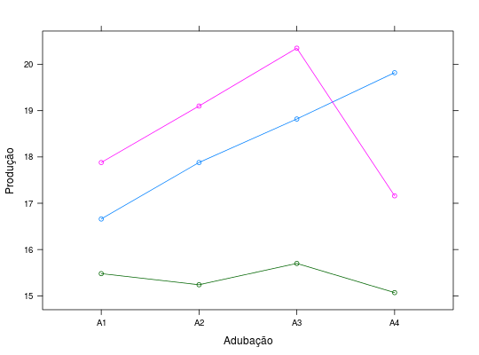

Ensaio de competição de batata doce, instalado em delineamento de blocos casualizados com 3 repetições e sob esquema fatorial 3 \(\times\) 4, onde foram avaliados 3 tipos de solos e 4 níveis de adubação.
Um data.frame com 12 observações e 3 variáveis, em que
soloadubprodBARROS; DIAS (2009), Exercício 10.4, Cap. 10, pág. 294.
Não foram exibidos todos os dados, pois dos \(4 \times 3 \times 3 = 36\) dados previstos, apenas 12 estão disponíveis. Julga-se que seja a média.
library(lattice) data(DiasEx10.4.6)#> Warning: data set ‘DiasEx10.4.6’ not foundstr(DiasEx10.4.6)#> 'data.frame': 12 obs. of 3 variables: #> $ solo: Factor w/ 3 levels "S1","S2","S3": 1 1 1 1 2 2 2 2 3 3 ... #> $ adub: Factor w/ 4 levels "A1","A2","A3",..: 1 2 3 4 1 2 3 4 1 2 ... #> $ prod: num 16.7 17.9 18.8 19.8 17.9 ...a <- reshape::cast(data = DiasEx10.4.6, solo ~ adub, value = "prod") addmargins(as.matrix(a[, -1]))#> Sum #> 16.66 17.88 18.82 19.82 73.18 #> 17.88 19.10 20.35 17.16 74.49 #> 15.48 15.24 15.70 15.07 61.49 #> Sum 50.02 52.22 54.87 52.05 209.16xtabs(~solo + adub, data = DiasEx10.4.6)#> adub #> solo A1 A2 A3 A4 #> S1 1 1 1 1 #> S2 1 1 1 1 #> S3 1 1 1 1xyplot(prod ~ adub, groups = solo, data = DiasEx10.4.6, type = "o", xlab = "Adubação", ylab = "Produção")